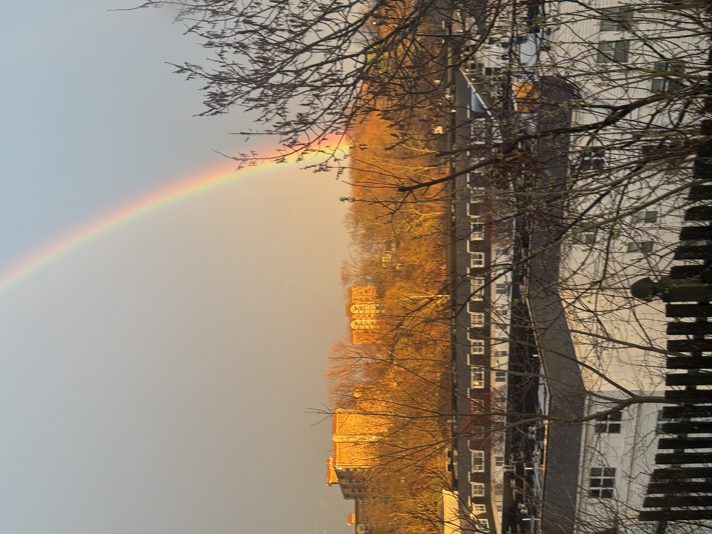
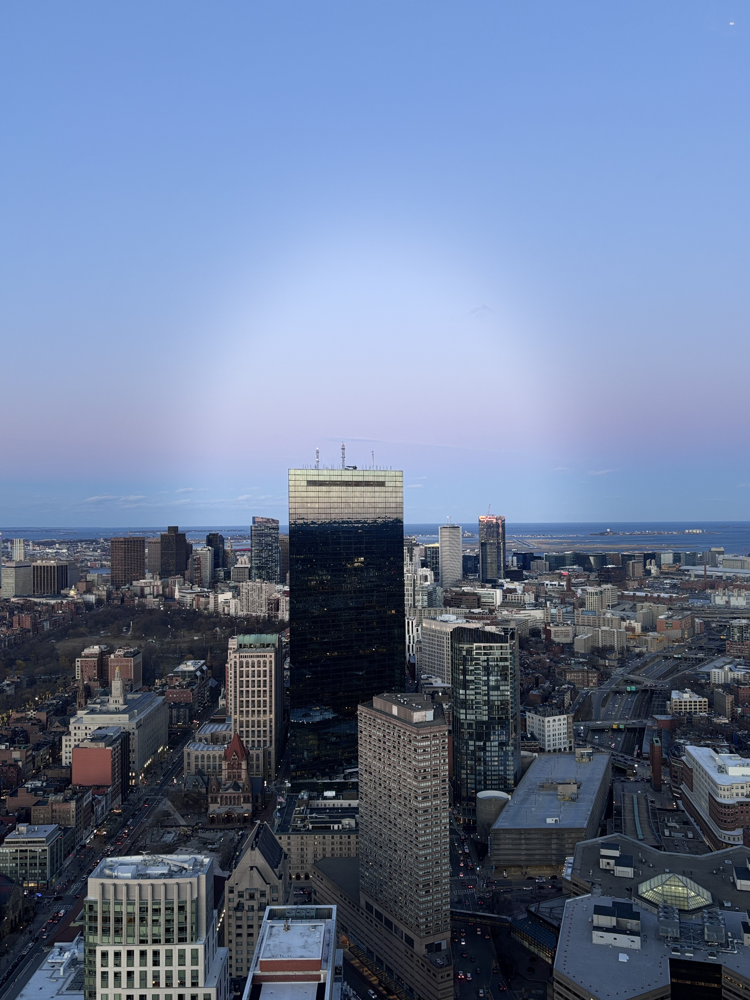

FRAME!
Photo Initiative
Home
About
Gallery
Submission
F
R
A
M
E
!
PHOTO
CONTEST
2025-2026
FRAME! Contest 2025 Spring/Summer


TIMELINE
Eastern Time (ET)
Submission Open
May 19 2026
Submission Deadline
June 19 2026
Review End
June 23 2026
Finalists Released
June 25 2026
Winner Announcemen
June 27 2026
×
❮
❯